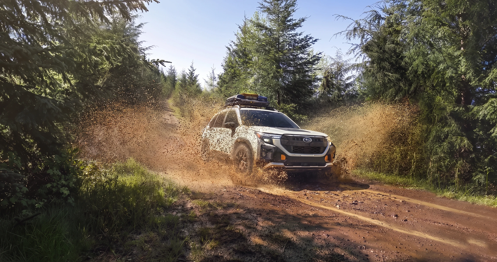
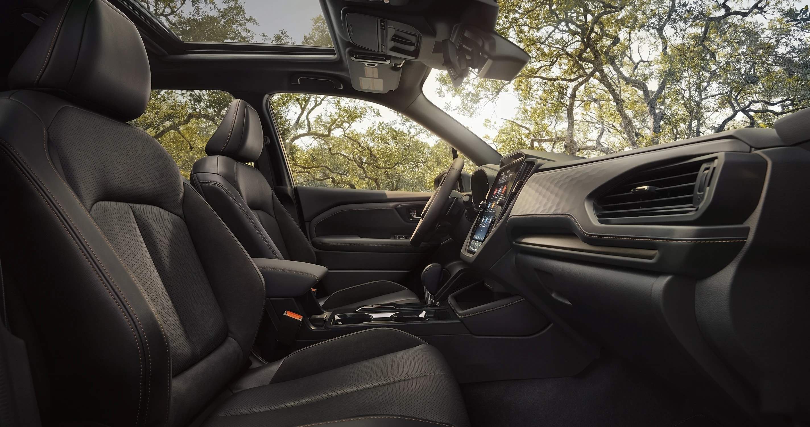

Subaru Forester vs Toyota RAV4. Expert comparison hub.
For Yavapai County families who actually use their vehicle for trails, monsoon-season commutes, and ski runs up to Flagstaff, the Forester wins on AWD capability, ground clearance, and standard safety. The RAV4 wins on hybrid powertrain choice, urban fuel economy, and resale brand momentum. Both are excellent compact SUVs. The right call depends on whether you weight outdoor capability or city efficiency higher.
Address
3230 Willow Creek RdPrescott, AZ 86301
Sales line
928-491-2260Next to Findlay Toyota Prescott
Standard AWD
ForesterSymmetrical AWD on every trim
Read
10 minReviewed May 2026

FINDLAY SUBARU PRESCOTT · ED. 26Subaru Forester on a Yavapai County forest service road. Image courtesy of Subaru of America.
01Quick winner by category
Forester for trails and standard safety. RAV4 for hybrid and resale.
This guide is written for buyers cross-shopping the Forester and RAV4 in Prescott, Prescott Valley, Chino Valley, and the surrounding Yavapai County trade area. We're Findlay Subaru Prescott at 3230 Willow Creek Road, directly next to Findlay Toyota Prescott at 3200 Willow Creek Road, our sister store inside Findlay Automotive Group.
That co-location is unusual: it means we see both vehicles every day, our service technicians are trained on Subaru specifically, and we can give you a straight answer about which fits a Yavapai outdoor-family lifestyle without commission pressure. Our sales staff is non-commissioned. If you'd rather skip the article and talk to a human, call Sales at 928-491-2260.
Last reviewed May 2026 by the Findlay Subaru Prescott editorial team. Author byline pending from Sales or Service Manager (Jason Jenkins or Robert Frank) before publication.
Quick winner by category
Trail capability
Forester · higher clearance, X-MODE, Symmetrical AWD standard
Towing
RAV4 · higher max tow rating across the lineup
Fuel economy (gas)
RAV4 · Dynamic Force engine
Hybrid availability
RAV4 · Hybrid + Prime plug-in hybrid
Standard AWD
Forester · Symmetrical AWD standard on every trim
Cargo behind 2nd row
Forester · wider opening, more usable cube
Standard active safety
Forester · EyeSight standard on every trim
Resale value (recent)
RAV4 · Toyota brand momentum
Mountain-road feel
Forester · lower center of gravity from flat-four
AZ heat resilience
Both · tested across desert markets
02Head-to-head specs
Symmetrical AWD standard. Hybrid and Prime plug-in. Read the build sheet.
Manufacturer data below is from Subaru.com and Toyota.com for the current model year. Any value marked [PENDING] is held until a service or sales advisor has confirmed it against the live configurator for the build you're quoting. For VIN-level confirmation on any spec, call Sales at 928-491-2260 and ask for the build sheet.
The Forester runs a 2.5L flat-four boxer paired with a Lineartronic CVT, with Symmetrical All-Wheel Drive standard on every trim. The RAV4 runs a 2.5L inline-four Dynamic Force engine with an 8-speed automatic on gas trims and a CVT-style transmission on Hybrid; front-wheel drive is standard with AWD optional on most trims.
The Forester's published ground clearance has run 8.7 in on recent model years ([PENDING: confirm for current MY]). RAV4 ground clearance runs 8.1 to 8.6 in depending on trim ([PENDING: confirm by trim for current MY]). Forester tows 1,500 lb in standard trim, with the Wilderness trim spec pending confirmation; the RAV4 tows up to 3,500 lb on AWD trims, with the trim breakdown also pending.
Hybrid availability is where the two diverge: RAV4 offers a Hybrid trim and a Prime plug-in hybrid; the Forester Hybrid is newer to the lineup. EPA combined MPG numbers (gas and hybrid) for both vehicles are held [PENDING] until confirmed for the current MY.
Both bundle active safety as standard: EyeSight Driver Assist on every Forester trim, Toyota Safety Sense 3.0 on every RAV4 trim. IIHS Top Safety Pick designations by model year are confirmable at iihs.org.

Subaru Forester. Image courtesy of Subaru of America.
Why Symmetrical AWD matters in Yavapai County
Always-on AWD doesn't wait for a wheel to slip before it acts.
Symmetrical AWD is mechanical and always engaged. There's no "decision moment" where the system has to wake up and shift torque to a wheel that has already slipped. On monsoon-season standing water on Highway 89, that matters more than the brochure suggests.
03AWD systems compared
Symmetrical AWD vs Dynamic Torque Vectoring: two systems, two behaviors.
This is the most important section for anyone driving Yavapai County roads. The two systems are engineered differently and they behave differently in the real world. Symmetrical AWD is always-on and mechanical. Toyota's Dynamic Torque Vectoring uses a rear driveline disconnect to save fuel and a torque-vectoring rear differential on higher trims.
Subaru Symmetrical All-Wheel Drive (Forester). Power is split front-to-rear through a center differential, and the layout is symmetrical along the vehicle centerline because the boxer engine sits low and flat, with the transmission and driveshafts aligned to it. Three things matter for a Yavapai driver.
It is always engaged. There is no "decision moment" where the system has to wake up and shift torque to a wheel that has already slipped. In monsoon-season standing water on Highway 89, that matters.
The center of gravity is lower because the boxer engine is flatter than a comparable inline-four. On switchbacks heading up to Mingus Mountain or back down through Jerome, Forester body roll is noticeably less aggressive than competitors.
X-MODE adds two off-road modes (Snow/Dirt and Deep Snow/Mud) that retune throttle, transmission, and brake-based torque vectoring for low-traction surfaces. Hill Descent Control is bundled in.
Toyota Dynamic Torque Vectoring AWD (RAV4 Adventure, TRD Off-Road, Woodland, Limited AWD). Toyota's higher-end AWD system uses a rear driveline disconnect to save fuel in everyday driving and a torque-vectoring rear differential that can shift up to 50% of available torque to either rear wheel. Lower trims of the RAV4 use a simpler on-demand AWD without the rear torque vectoring. The system disconnects rear drive when not needed to save fuel, which is one reason RAV4 AWD gas-economy numbers are competitive. Multi-Terrain Select (Mud & Sand, Rock & Dirt, Snow) and Downhill Assist are included on the off-road-oriented trims, not the base XLE/LE.
The honest read for a Prescott buyer: if you commute and run two or three trail trips a year, both systems handle it. If your vehicle sees Granite Mountain, Spruce Mountain, or backroads to Walker Road regularly, the Forester's always-on system plus higher ground clearance is the more confident platform. If you tow a boat or small camper to Lake Pleasant and want a hybrid powertrain, the RAV4 lineup gives you towing headroom and an EV-mode option the Forester does not match yet.
Always-onMechanical
Symmetrical AWD
Standard on every Forester trim. No engagement delay because there's no engagement to begin with: power is always split front-to-rear through the center diff, symmetrical along the vehicle centerline.
Snow/Dirt and Deep Snow/Mud retune throttle, transmission, and brake-based torque vectoring for low-traction surfaces. Hill Descent Control bundled in. Useful on the dirt approaches to Lynx Lake or Granite Basin.
Adventure, TRD Off-Road, Woodland, and Limited AWD trims. Rear driveline disconnects to save fuel; torque-vectoring rear diff can shift up to 50% of available torque to either rear wheel.
Forester 8.7 in (recent MY baseline; [PENDING current MY]). RAV4 8.1 to 8.6 in depending on trim. TRD Off-Road and Woodland close some of the gap with tuned suspension and skid plates.
RAV4 Hybrid and RAV4 Prime plug-in hybrid give you EV-only range and best-in-class combined MPG. Forester Hybrid is newer to the lineup; ask Sales for current-MY availability.
RAV4 tows up to 3,500 lb on AWD trims ([PENDING: trim breakdown]). Forester gas tows 1,500 lb; Wilderness trim spec [PENDING]. For a small camper to Lake Pleasant, the RAV4 has the headroom.
Drive both. Our sister store is 200 yards away.
Findlay Subaru Prescott (3230 Willow Creek) and Findlay Toyota Prescott (3200 Willow Creek) share the same corner. Non-commissioned sales team. Same-day cross-shopping is the default.
EyeSight vs Toyota Safety Sense: both standard, different calibration feel.
Both vehicles have earned strong safety scores in recent model years. Both bundle their active-safety stacks as standard equipment on every trim, and neither one makes you pay extra for the basics. Where they differ is calibration feel. EyeSight tends to alert earlier with more conservative following distances; TSS 3.0 tends to ride closer before intervening.
Subaru EyeSight Driver Assist (Forester).
EyeSight uses a stereo-camera setup mounted at the windshield, which is unusual versus the radar-based systems most competitors use. Standard features include Pre-Collision Braking, Adaptive Cruise Control, Lane Departure and Sway Warning, Lane Keep Assist, Lead Vehicle Start Alert, and on newer Foresters Automatic Emergency Steering. Subaru has historically been an IIHS Top Safety Pick+ winner across the Forester lineup; confirm specific year designations at iihs.org or [PENDING: confirm Forester IIHS Top Safety Pick designation for current MY].
Toyota Safety Sense 3.0 (RAV4).
Toyota Safety Sense 3.0 bundles Pre-Collision System with Pedestrian Detection, Full-Speed Dynamic Radar Cruise Control, Lane Departure Alert with Steering Assist, Lane Tracing Assist, Automatic High Beams, and Road Sign Assist. Standard across the RAV4 lineup. Like the Forester, the RAV4 has been a frequent IIHS Top Safety Pick honoree; confirm current designation at [PENDING: confirm RAV4 IIHS Top Safety Pick designation for current MY].
What the two systems share.
Both are standard, both well-tested, and both effective at the speeds Prescott drivers see every day. The calibration difference is a personal-preference call, and the only way to know which suits you is to drive each one. Schedule a Forester test drive at 928-491-2260 and our team will set you up; you can walk 200 yards across to Findlay Toyota Prescott and drive the RAV4 on the same morning.
The honest read on safety calibration.
EyeSight alerts earlier and follows more conservatively. TSS 3.0 rides closer and intervenes later. For a family with a teenage driver, EyeSight's earlier warnings tend to be the more forgiving platform. For a confident solo driver who finds the constant alerts distracting, TSS 3.0's later-intervening calibration feels more natural. Try both before you decide which feel you want to live with for five years.
"I drove the Forester first, then walked over and drove a RAV4. The Subaru beeped at me earlier when I drifted, the Toyota waited longer. Same road, same speed. I went with the Subaru because my husband and I split the highway driving and he likes the earlier warning. Different person, different answer."
Paraphrased · recurring theme in cross-shop conversations on our showroom floor · direct verbatim pending customer permission
05Arizona: heat, monsoon, trails
Yavapai County is mountain-desert. Most national reviews miss this.
Prescott sits at 5,400 feet of elevation, the Quad Cities see real monsoon rain July through September, and our customers actually drive forest service roads. This is the section most national comparison articles miss. Both vehicles are tested across desert markets. Always-on AWD is the meaningful difference in monsoon standing water; Forester ground clearance edges the gap on rough trails.
Heat resilience. Both vehicles are sold and serviced at scale in Phoenix, Tucson, and Las Vegas. Both have factory air conditioning rated for high-load operation, and both use modern cooling-system architecture. Subaru heat-tolerance specifics (coolant capacity, oil-cooler standard equipment, A/C performance at 110°F-plus) vary by trim and powertrain; for any heat-specific question call Service at 928-719-3380 and our Subaru Certified Master Technicians (Nickolas Popov, Justin Furber, or David Greenwood) will walk you through it. [PENDING: Subaru-published heat tolerance / Arizona-specific testing data, if available from Subaru of America.]
Monsoon traction. Standing water on Highway 69 and 89 between July and September is the real-world AWD test. Always-on systems like Symmetrical AWD have a measurable advantage here because they do not need to detect slip before responding. RAV4 AWD systems respond well once slip is detected; the gap is small for a careful driver and meaningful for a less experienced one. For a family with a teenage driver, the Forester is the more forgiving platform.
Ground clearance and trail readiness. Forester ground clearance is 8.7 in on the standard trims, higher than the equivalent RAV4 trims. RAV4 TRD Off-Road and Woodland trims close some of that gap with tuned suspension and skid plates. If you intend to run trails near Lynx Lake, Indian Creek, or Granite Basin Lake, the Forester out of the box is more capable, but a properly trimmed RAV4 Off-Road can also handle them. Forester Wilderness trim (where available; [PENDING: confirm Wilderness availability and ground clearance for current MY]) extends Forester capability further.
Cold mornings. Prescott winters are not Flagstaff winters, but they are real. Both vehicles include heated front seats on most trims and available heated steering wheels. EyeSight and Toyota Safety Sense both perform well in cold-start conditions. If you commute to Flagstaff regularly, Subaru's flat-engine warm-up characteristics and standard AWD make the Forester the more confident winter-commute platform.
Specs verified May 2026 against Subaru of America, Toyota, and IIHS. Items marked [PENDING] will be confirmed before publication.
06Ownership costs
Maintenance, insurance, and resale: 5-year math for Arizona.
A 5-year ownership cost comparison is rarely the headline number but often the difference between two otherwise-equal vehicles. Subaru maintenance intervals on the FB25 flat-four run about 6,000 miles for oil-and-filter. Toyota intervals on the Dynamic Force gas engine and the hybrid systems run about 10,000 miles. Both vehicles include complimentary scheduled maintenance at delivery; both insure comparably in Arizona; RAV4 holds a slight resale edge across recent indices.
Maintenance. Both Forester and RAV4 are mass-market mainstream SUVs with mature service networks. Per-visit cost at Findlay Subaru Prescott runs in line with regional Subaru averages; ask Service at 928-719-3380 for a current oil-and-filter quote on your specific trim, and ask about our Express Service walk-in lane (Mon-Sat 8 AM to 5 PM, walk-ins close 4 PM Mon-Fri). Both vehicles include a complimentary scheduled-maintenance program at delivery; verify current Subaru and Toyota program terms with your sales advisor.
Insurance. Insurance cost in Arizona is driven by trim level, driver record, and zip code more than by the Forester-vs-RAV4 distinction. Both are mainstream compact SUVs with strong safety scores, both qualify for safety-equipment insurance discounts on most policies, and both insure comparably across major AZ carriers. [PENDING: Arizona-specific Forester vs RAV4 insurance cost reference, verify with our Finance team (Justin Pettycrew or Pauly Moyers) before quoting numbers.]
Resale value. Toyota has a long-standing resale advantage as a brand, and the RAV4 in particular has held value well over the last three model years. Subaru resale is competitive. The Forester is typically in the top tier of the compact SUV segment for retained value at 3 and 5 years, but RAV4 has edged it on most published indices. [PENDING: 5-year resale value comparison Arizona, Forester vs RAV4, pull from KBB Brand Image Award and ALG Residual Value Award data, Service-Manager or General-Manager attributable.] For a buyer planning to keep the vehicle 8-plus years, that gap matters less than for a buyer planning to trade at 3 years.
6kmi
Forester oil/filter interval
10kmi
RAV4 oil/filter interval
3,500lb
RAV4 max tow (AWD trims)
8.7in
Forester ground clearance
If you tow regularly or want a plug-in hybrid with EV-only range, the RAV4 lineup gives you headroom the Forester does not currently match. If you want always-on AWD and the highest standard active-safety bundle without paying up a trim, the Forester is the more confident pick.
Prescott pricing, transparent. Decision matrix by priority.
National MSRP is the same here as anywhere. What varies is what's actually on the lot in Prescott and what dealer-installed accessories or protection plans are common to the area. Our pricing is transparent: the price you see is the price you pay, with no hidden fees. That's the structural reason our sales staff is non-commissioned, they earn on customer satisfaction, not per-unit commission.
Prescott pricing ranges.
Subaru Forester pricing range, Prescott market: [PENDING: Prescott Forester pricing range, current MSRP-to-out-the-door span by trim, pulled from our Sales desk (Mark Falk, GSM; John Ward, Sales Manager; Kyle Watson, Internet Sales Manager).]
Toyota RAV4 pricing range, Prescott market (cross-shop reference, not a quote we make): [PENDING: Prescott-area RAV4 pricing, verify with our sister store Findlay Toyota Prescott Sales Manager, or pull from a current TrueCar / Edmunds local market scan.]
Two notes on the Prescott market specifically. First, our pricing is transparent at Findlay Subaru Prescott. Cross-shopping is not adversarial here. If, after the test drive, the RAV4 is the right car for your family, we will tell you, and our sister store is 200 yards away.
Second, both stores share a service drive philosophy because they share corporate parent and ownership norms (Findlay Automotive Group, founded 1961, 30-plus rooftops across NV, AZ, UT, ID, OR, and WA). The buy-here, service-here pattern works in either direction.
Findlay Subaru Prescott team at the dealership.
Which is right for you: decision matrix.
Trails near Granite Mountain, Lynx Lake, or higher-elevation forest service roads · Forester
Family ski trips to Flagstaff, Snowbowl, or Sunrise · Forester
Monsoon-season commute confidence on Highway 89 / 69 · Forester
Towing a small camper or boat (3,500-lb class) to Lake Pleasant · RAV4
Hybrid or plug-in hybrid with EV-only range · RAV4 Prime
Lowest fuel cost over 5 years, mostly city / suburban driving · RAV4 Hybrid
Highest standard active-safety bundle without paying up a trim · Forester
Best resale value if you trade at 3 years · RAV4
Bilingual sales support (English / Spanish) on the showroom floor · Findlay Subaru Prescott: Gabriel Madel (Product Specialist) on Sales; Jesus Soria on Service
If you're weighing the Forester against a Honda CR-V instead, that's a different comparison and worth its own guide; ask us in the showroom and we will walk you through it side by side. If you're already leaning Subaru and just want to know whether the Forester is the right Subaru for your family, our Subaru Crosstrek vs Forester for Prescott buyers guide makes that internal call. If you're weighing the Forester against the new Forester Hybrid, our Subaru Forester Hybrid for Prescott explainer covers it.
Findlay Subaru Prescott
The Subaru retailer 200 yards from a Toyota store, by design.
1961
Findlay Automotive Group founding year
30+
Findlay rooftops NV · AZ · UT · ID · OR · WA
200 yd
Walk from our showroom to Findlay Toyota Prescott
0%
Sales-floor commission actual policy, not a tagline
The honest cross-shop
The Forester for trail capability, ground clearance, standard Symmetrical AWD, and the highest standard active-safety bundle. The RAV4 for hybrid and plug-in hybrid options, towing headroom up to 3,500 lb on AWD trims, and recent resale-value momentum. We see both vehicles every day on this corner.
How we sell
Non-commissioned sales team. Whoever's helping you is paid the same regardless of whether you buy a Forester or walk across to Findlay Toyota Prescott for a RAV4. The price you see is the price you pay, with no hidden fees. Bilingual Product Specialist Gabriel Madel on Sales; Jesus Soria on Service.
Hours & access
3230 Willow Creek Road, Prescott AZ 86301. Browse Forester inventory or call to set up a same-morning cross-shop with the RAV4 next door.
Is the Subaru Forester or Toyota RAV4 better for Arizona?
Both are well-suited to Arizona. The Forester is the better answer for mountain, monsoon, and trail driving common in Yavapai County thanks to its always-on Symmetrical AWD, higher standard ground clearance, and X-MODE off-road system. The RAV4 is the better answer for hybrid-focused fuel economy, towing up to roughly 3,500 lb, and resale value, especially for buyers who do most of their driving in Phoenix, Tucson, or other lower-elevation cities.
Which has better AWD: Forester or RAV4?
For real-world capability on Arizona forest service roads, monsoon-season standing water, and switchback mountain roads, the Forester's Symmetrical All-Wheel Drive is the more confident platform because it is always engaged and balanced along the vehicle centerline. The RAV4's Dynamic Torque Vectoring AWD (on Adventure, TRD Off-Road, Woodland, and Limited AWD trims) is highly capable when engaged, particularly on uneven trail surfaces, and the rear driveline disconnect helps fuel economy. Base-trim RAV4 AWD is simpler and less capable than either system above it.
Does the Forester or RAV4 have better fuel economy?
The Toyota RAV4 generally wins on fuel economy, especially in its Hybrid and Prime plug-in hybrid trims. The Forester gas engine returns competitive numbers but is not a class leader on combined MPG, and the Forester Hybrid is newer to the lineup. For confirmed model-year numbers, check the EPA window sticker on the unit you are quoting or call our Sales desk at 928-491-2260.
Is the Forester safer than the RAV4?
Both vehicles include their full active-safety stack as standard equipment on every trim (Subaru EyeSight on the Forester, Toyota Safety Sense 3.0 on the RAV4), and both have been frequent IIHS Top Safety Pick honorees in recent model years. The Forester edges the RAV4 on standard active-safety breadth at the lower trims, but the gap closes at mid- and upper trims. Confirm current IIHS Top Safety Pick designation by model year at iihs.org.
Which has more cargo space, Forester or RAV4?
The two are very close on cube and dimensional measurements. The Forester has a wider square cargo opening that makes it easier to load dog crates, kayaks, and bike-frame cases; the RAV4 has a lower load floor on some trims that makes lifting heavy gear easier. For a family-sized cargo load, both are competitive. We have both on the corner at 3230 and 3200 Willow Creek Road, so come compare them with your gear in the parking lot.
What is the Forester resale value vs RAV4 in Arizona?
Toyota brand resale has held a slight edge across recent indices, and the RAV4 specifically has been a top performer for retained value. The Subaru Forester is competitive (typically a top-tier compact SUV for retained value), but the RAV4 edges it on most published rankings. [PENDING: 5-year resale value comparison Arizona, Forester vs RAV4, pull from KBB Brand Image Award and ALG Residual Value Award data, Service-Manager or General-Manager attributable.]
Can I test drive both at the same dealer corridor?
Yes. Findlay Subaru Prescott (3230 Willow Creek Road) and Findlay Toyota Prescott (3200 Willow Creek Road) are sister stores inside Findlay Automotive Group, located on the same corner. Schedule a Forester test drive with us at 928-491-2260 and walk across to Findlay Toyota Prescott to drive a RAV4. Same-day cross-shopping is the default here, not the exception.
09Provenance
Sources & references
By the Findlay Subaru Prescott editorial team, with review by [PENDING: Sales or Service Manager byline, Jason Jenkins or Robert Frank] · drafted May 12, 2026 · target publish June 8, 2026. Editorial Gate H sign-off pending.
Researched and drafted with AI assistance. Fact-checked against primary sources: Subaru of America, Toyota, IIHS, EPA, and the Findlay Automotive Group corporate record. All Forester and RAV4 specifications are confirmed against current Subaru.com and Toyota.com configurators for the published model year before launch. Items marked [PENDING:] (17 markers covering 14 unique fact gaps) will be resolved with verified manufacturer, IIHS, or dealer-supplied data before publication.
All specs reflect manufacturer-published values as of May 2026. Local observations reflect Findlay Subaru Prescott showroom and service department experience in the Yavapai region, and cross-shop conversations with sister store Findlay Toyota Prescott.
Drive the Forester. Walk 200 yards. Drive the RAV4. Then decide.
Non-commissioned sales team. Same corner, same morning, no commission pressure. Findlay Subaru Prescott (3230 Willow Creek) and Findlay Toyota Prescott (3200 Willow Creek) are sister stores inside Findlay Automotive Group.